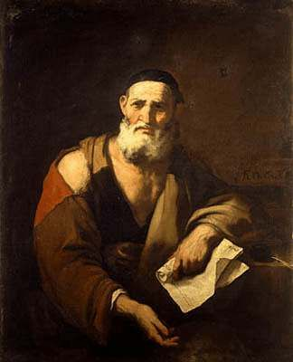

Who Was Leucippus?
Leucippus was an ancient Greek philosopher of the fifth century BCE who is traditionally regarded as the founder of Greek atomism. Very little is known with certainty about his life, and ancient sources often discuss his ideas together with those of his associate and student Democritus.
Leucippus is especially important for the development of the theory that reality consists of indivisible bodies, or atoms, moving through the void. His philosophy attempted to explain how change, motion, and the apparent diversity of the world are possible without requiring things to come into existence from absolute nothing.
Because the evidence about Leucippus is fragmentary, historians must be careful when separating his own ideas from the more fully developed atomism associated with Democritus.
Leucippus: Quick Facts
- Name — Leucippus
- Period — Fifth century BCE
- Philosophical tradition — Pre-Socratic philosophy and ancient Greek atomism
- Known for — The theory of atoms and void
- Associated thinker — Democritus
- Major philosophical concern — Explaining change, motion, plurality, and the nature of reality
- Surviving writings — Only fragments and reports attributed to him survive
- Historical importance — Traditionally regarded as the founder of Greek atomism
Leucippus and the Rise of Ancient Greek Atomism

Leucippus belongs to the generation of Greek philosophers who confronted difficult questions about change and reality raised by earlier thinkers, particularly Parmenides and the Eleatic tradition.
Parmenidean arguments were understood to create a serious problem: if coming into being from what does not exist is impossible, how can the changing world we experience exist at all?
Leucippus' atomism offered one response. Instead of treating the visible world as composed of substances that continuously come into and pass out of existence, the atomists proposed permanent, indivisible bodies whose combinations and movements produce the changing appearances of the world.
What Did Leucippus Believe About Atoms and Void?
The central idea associated with Leucippus is that reality consists fundamentally of atoms and void. Atoms are indivisible, solid bodies, while the void provides the space through which atoms can move.
According to the atomist theory, atoms themselves do not undergo the kinds of changes experienced by ordinary objects. Instead, objects arise from different arrangements and combinations of atoms.
This distinction allowed the atomists to explain apparent change without requiring the fundamental constituents of reality themselves to be generated or destroyed.
How Did Leucippus Explain Motion and Change?
Leucippus' theory was designed to make sense of motion and change in a world ultimately composed of permanent constituents.
Atoms move through the void and can combine into different configurations. When their arrangements change, the larger objects formed from them also change.
In this way, the atomists could distinguish between fundamental reality and the changing objects of ordinary experience. The atoms remain, while their arrangements change.
Why Did Leucippus Develop Atomism?
Ancient sources and modern scholarship commonly connect the rise of atomism with the philosophical problems posed by Parmenides and Zeno.
If reality is completely indivisible and unchanging, as some ancient interpretations of Parmenides suggested, then motion and plurality become difficult to explain. Leucippus attempted to preserve both permanent underlying realities and the observable existence of movement and multiplicity.
His solution was to propose many indivisible atoms together with void. The atoms remain unchanged, while their movement and rearrangement produce the changing world.
Leucippus' Theory of the Universe
Ancient reports attribute to Leucippus a cosmology in which worlds can form through the movements and combinations of atoms.
According to reports preserved by later writers, atoms moving in the void could form a vortex-like motion. From such movements, groups of atoms could separate and combine into cosmic structures.
These cosmological reports are considerably less secure than the basic association between Leucippus and atomism. They should therefore be understood as ancient testimony about his philosophy rather than as a complete surviving cosmological text.
Leucippus, Necessity, and Natural Explanation
Leucippus is associated with a strongly naturalistic explanation of the world. Events were explained through the movements and interactions of atoms rather than through divine intervention directing every natural event.
One surviving statement attributed to Leucippus says that nothing happens in vain but everything occurs according to reason and necessity. The precise interpretation of this fragment remains a matter of philosophical discussion.
The broader atomist approach attempted to explain the apparent order of nature through the behavior of material constituents rather than through a purpose imposed from outside the natural world.
Leucippus and Democritus
Leucippus is closely connected with Democritus, who is generally regarded as the philosopher who developed and systematized the atomist theory in greater detail.
The historical evidence makes it difficult to determine exactly which ideas belong specifically to Leucippus and which belong to Democritus. Ancient sources frequently discuss the two philosophers together.
Leucippus is therefore important not only as an individual thinker but also as the earliest figure traditionally associated with the Greek atomist system that Democritus later developed.
Did Leucippus Write Any Books?
Very little of Leucippus' written work survives. Ancient sources sometimes attribute works to him, including a work known as the Great World-System, but the evidence surrounding his writings is limited.
One quotation is also attributed to a work concerning the mind. Because the surviving evidence is fragmentary, it is difficult to reconstruct a complete philosophical system directly from Leucippus' own writings.
Much of what we know about his philosophy therefore comes from later ancient authors who reported, interpreted, or criticized early atomist ideas.
What Do We Actually Know About Leucippus?
Leucippus is an important example of the difficulty of studying Presocratic philosophy. His historical importance is widely recognized, but the surviving evidence about his life and individual doctrines is extremely limited.
Relatively Well-Attested
- Leucippus is traditionally regarded as an early Greek atomist.
- He is strongly associated with the theory of atoms and void.
- He is closely connected with Democritus and the development of ancient Greek atomism.
Uncertain or Disputed
- The exact details of his life and place of birth.
- The precise extent of his influence on Democritus.
- Which specific doctrines attributed to the atomists originated with Leucippus himself.
- The exact content and authorship of works attributed to him.
Why Is Leucippus Important in Philosophy?
Leucippus is important because the atomist theory associated with him offered one of the earliest systematic attempts to explain the physical world in terms of indivisible material constituents and empty space.
His philosophy addressed fundamental metaphysical questions about being, change, motion, plurality, and the structure of reality.
The atomist tradition continued through Democritus and later became important to Epicurean philosophy and the Roman poet-philosopher Lucretius.
Leucippus Explained Simply
Leucippus was an ancient Greek philosopher who tried to explain how a changing world could exist if reality had permanent foundations.
- Basic reality: Atoms and void.
- Atoms: Indivisible and unchanging material bodies.
- Void: Empty space through which atoms move.
- Change: Produced by changes in the arrangements and movements of atoms.
- Historical importance: Traditionally regarded as the founder of Greek atomism.
Frequently Asked Questions About Leucippus
Who was Leucippus?
Leucippus was a fifth-century BCE Greek philosopher traditionally regarded as the founder of ancient Greek atomism.
What is Leucippus famous for?
Leucippus is famous primarily for his association with the theory that reality consists of atoms and void.
What did Leucippus believe?
Leucippus is traditionally associated with the belief that indivisible atoms move through the void and combine into different arrangements that produce the changing world.
What are atoms and void in Leucippus' philosophy?
Atoms are the indivisible solid constituents of reality, while the void provides the space necessary for their movement.
Was Leucippus the first atomist?
Leucippus is generally regarded as the earliest well-attested figure associated with atomism in the Greek philosophical tradition.
What is the connection between Leucippus and Democritus?
Leucippus is traditionally regarded as the founder of the atomist theory, while Democritus developed and systematized the theory in greater detail.
Did Leucippus write books?
Ancient sources attribute writings to Leucippus, but very little of his work survives and his philosophical views are known mainly through later reports.
Related Pre-Socratic Philosophers
Leucippus belongs to the wider tradition of Pre-Socratic philosophy. Explore thinkers who developed different explanations of nature, reality, change, and the structure of the cosmos.
Philosophy Branches Connected to Leucippus
Leucippus' atomism is especially important for metaphysics and the philosophical study of nature. His theory raises questions about the ultimate structure of reality, matter, change, space, and motion.
Why Leucippus Still Matters
Leucippus occupies an important place in the history of philosophy because he is traditionally associated with one of the earliest Greek theories explaining the physical world through atoms and void.
Although the evidence about his individual ideas is limited, the atomist tradition that bears his name became one of the most important materialist approaches in ancient philosophy.
His ideas helped establish a philosophical problem that continued long after antiquity: what is reality ultimately made of, and how can change arise from its fundamental constituents?
Explore Great Philosophers